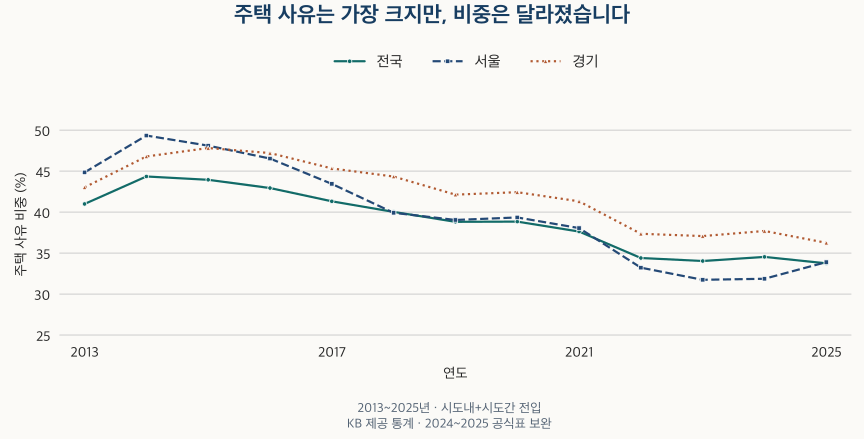

이사와 인구 · 주된 전입 사유
이사 이유 1위는 집일까? 서울·경기 전입 사유 13년
2013~2025년 전국·서울·경기 전입 사유와 서울 아파트 거래량을 비교합니다. 전체 전입과 시도간 전입의 다른 1위, 교육·직업 비중이 높은 지역과 해석 한계를 확인합니다.
분석 기간 · 2013~2025년 · 자치구 비교 2023년 | 자료 기준일 · 2026-10-04
사람들이 동네를 옮기는 가장 큰 이유는 집일까요? 전국·서울·경기의 2013~2025년 전체 전입에서는 매년 ‘주택’ 사유가 가장 많았습니다. 하지만 다른 시도에서 들어온 사람만 고르면 답이 달라집니다. 2025년에는 전국과 서울은 직업, 경기는 가족이 가장 큰 사유였습니다. 이사 이유를 주거 수요로 읽으려면 먼저 어떤 이동을 세었는지 확인해야 합니다.
전입 사유는 누구에게 무엇을 묻는 통계인가요?
국내인구이동통계는 전입신고 중 읍면동 경계를 넘어 거주지를 옮긴 이동을 셉니다. 같은 읍면동 안의 이사까지 포함한 모든 이사 건수는 아닙니다. 이 글의 ‘전체 전입’에는 같은 시도 안에서 다른 읍면동으로 이동한 사람과 다른 시도에서 들어온 사람이 모두 포함됩니다.
신고서에서는 직업·가족·주택·교육·주거환경·자연환경·기타 중 주된 사유 한 가지를 고릅니다. 여러 이유가 겹쳤더라도 일곱 항목에 중복 응답한 비율이 아닙니다. 집계 단위도 신고서 수나 계약 건수가 아니라 이동한 사람 수입니다. 여러 명이 함께 이동하는 신고를 사람마다 따로 물은 설문처럼 해석해서는 안 됩니다.
주택에는 주택 구입이나 계약기간 만료가, 직업에는 취업·사업·직장 이동이 포함됩니다. 교육은 진학·학업·자녀 교육을 포괄하며, 주거환경은 교통·편의시설 같은 조건을 뜻합니다. 예를 들어 직장을 옮기면서 새집을 계약했더라도 대표 사유로 직업을 골랐다면 주택 사유에는 더해지지 않습니다.
공식 통계 설명자료는 전입신고 서식과 입력 방식의 개선이 2013년부터 적용됐다고 설명합니다. 이 글도 2013~2025년을 비교합니다. 주민등록 세대·생활하는 가구·건물의 주택 수가 헷갈린다면 인구·세대·가구의 차이부터 확인해 보세요.
13년 동안 주택 사유가 계속 1위였나요?
네. 전국·서울·경기 각각의 전체 전입에서 2013년부터 2025년까지 매년 주택 사유가 가장 컸습니다. 다만 1위라는 말이 비중의 상승을 뜻하지는 않습니다. 서울의 주택 사유 비중은 2014년 49.34%에서 2023년 31.74%까지 낮아졌고, 2025년에는 33.90%였습니다.

| 연도 | 전국 | 서울 | 경기 |
|---|---|---|---|
| 2013 | 40.99 | 44.85 | 43.02 |
| 2014 | 44.35 | 49.34 | 46.79 |
| 2015 | 43.94 | 48.11 | 47.82 |
| 2016 | 42.94 | 46.54 | 47.21 |
| 2017 | 41.32 | 43.45 | 45.33 |
| 2018 | 40.02 | 39.92 | 44.34 |
| 2019 | 38.82 | 39.04 | 42.13 |
| 2020 | 38.84 | 39.35 | 42.43 |
| 2021 | 37.63 | 38.05 | 41.32 |
| 2022 | 34.40 | 33.22 | 37.36 |
| 2023 | 34.04 | 31.74 | 37.08 |
| 2024 | 34.54 | 31.87 | 37.70 |
| 2025 | 33.75 | 33.90 | 36.25 |
2025년의 전체 구성을 보면 주택 다음으로 가족·직업의 비중이 큽니다. 아래는 사유별 인원을 전체 전입 인원으로 나눠 소수 둘째 자리까지 표시한 값입니다. 반올림 때문에 표시된 비율의 합이 정확히 100이 되지 않을 수 있습니다.
| 주된 사유 | 전국 | 서울 | 경기 |
|---|---|---|---|
| 직업 | 21.41 | 21.41 | 20.08 |
| 가족 | 25.89 | 23.95 | 26.43 |
| 주택 | 33.75 | 33.90 | 36.25 |
| 교육 | 5.98 | 7.42 | 4.46 |
| 주거환경 | 5.26 | 6.40 | 5.00 |
| 자연환경 | 1.10 | 0.32 | 0.90 |
| 기타 | 6.63 | 6.60 | 6.88 |
2013~2025년 일곱 사유 전체 표 보기
| 연도 | 직업 | 가족 | 주택 | 교육 | 주거환경 | 자연환경 | 기타 |
|---|---|---|---|---|---|---|---|
| 2013 | 19.51 | 22.48 | 40.99 | 4.20 | 1.98 | 0.95 | 9.88 |
| 2014 | 20.77 | 23.27 | 44.35 | 4.18 | 2.38 | 1.03 | 4.01 |
| 2015 | 21.18 | 23.23 | 43.94 | 3.81 | 2.12 | 0.93 | 4.79 |
| 2016 | 20.98 | 23.63 | 42.94 | 3.88 | 2.10 | 0.90 | 5.57 |
| 2017 | 20.54 | 23.40 | 41.32 | 4.30 | 2.97 | 1.08 | 6.38 |
| 2018 | 20.99 | 23.33 | 40.02 | 4.30 | 3.40 | 1.08 | 6.88 |
| 2019 | 21.58 | 23.82 | 38.82 | 4.69 | 3.99 | 1.11 | 5.99 |
| 2020 | 21.16 | 23.21 | 38.84 | 4.47 | 4.42 | 1.15 | 6.75 |
| 2021 | 22.03 | 22.97 | 37.63 | 4.44 | 4.33 | 1.20 | 7.40 |
| 2022 | 23.40 | 23.72 | 34.40 | 5.35 | 4.51 | 1.21 | 7.41 |
| 2023 | 22.82 | 24.07 | 34.04 | 5.71 | 5.13 | 1.13 | 7.10 |
| 2024 | 21.66 | 24.69 | 34.54 | 5.94 | 5.27 | 1.08 | 6.82 |
| 2025 | 21.41 | 25.89 | 33.75 | 5.98 | 5.26 | 1.10 | 6.63 |
| 연도 | 직업 | 가족 | 주택 | 교육 | 주거환경 | 자연환경 | 기타 |
|---|---|---|---|---|---|---|---|
| 2013 | 17.55 | 21.24 | 44.85 | 4.45 | 2.38 | 0.38 | 9.16 |
| 2014 | 18.74 | 21.55 | 49.34 | 4.58 | 2.65 | 0.38 | 2.76 |
| 2015 | 19.02 | 21.38 | 48.11 | 4.15 | 2.28 | 0.31 | 4.75 |
| 2016 | 19.26 | 21.27 | 46.54 | 4.39 | 2.45 | 0.29 | 5.79 |
| 2017 | 19.07 | 21.59 | 43.45 | 4.97 | 3.47 | 0.37 | 7.10 |
| 2018 | 20.67 | 21.92 | 39.92 | 5.17 | 3.97 | 0.40 | 7.95 |
| 2019 | 21.51 | 22.29 | 39.04 | 5.75 | 4.56 | 0.36 | 6.49 |
| 2020 | 20.77 | 21.69 | 39.35 | 5.57 | 4.96 | 0.36 | 7.30 |
| 2021 | 21.93 | 21.18 | 38.05 | 5.37 | 4.94 | 0.33 | 8.21 |
| 2022 | 24.32 | 22.06 | 33.22 | 6.88 | 5.33 | 0.34 | 7.86 |
| 2023 | 23.99 | 22.54 | 31.74 | 7.59 | 6.32 | 0.35 | 7.46 |
| 2024 | 22.97 | 23.11 | 31.87 | 7.80 | 6.62 | 0.35 | 7.29 |
| 2025 | 21.41 | 23.95 | 33.90 | 7.42 | 6.40 | 0.32 | 6.60 |
| 연도 | 직업 | 가족 | 주택 | 교육 | 주거환경 | 자연환경 | 기타 |
|---|---|---|---|---|---|---|---|
| 2013 | 18.79 | 20.78 | 43.02 | 3.74 | 1.96 | 0.84 | 10.88 |
| 2014 | 19.66 | 22.07 | 46.79 | 3.70 | 2.39 | 0.94 | 4.45 |
| 2015 | 19.51 | 21.82 | 47.82 | 3.26 | 2.11 | 0.76 | 4.73 |
| 2016 | 19.50 | 22.11 | 47.21 | 3.17 | 1.85 | 0.71 | 5.46 |
| 2017 | 19.00 | 22.24 | 45.33 | 3.43 | 2.69 | 0.90 | 6.41 |
| 2018 | 19.27 | 21.90 | 44.34 | 3.37 | 3.28 | 0.91 | 6.93 |
| 2019 | 19.98 | 23.18 | 42.13 | 3.75 | 3.87 | 0.96 | 6.13 |
| 2020 | 19.59 | 22.79 | 42.43 | 3.57 | 4.28 | 1.00 | 6.33 |
| 2021 | 20.49 | 22.51 | 41.32 | 3.41 | 3.99 | 1.00 | 7.28 |
| 2022 | 22.11 | 23.81 | 37.36 | 4.07 | 4.14 | 0.97 | 7.54 |
| 2023 | 21.33 | 24.09 | 37.08 | 4.27 | 4.94 | 0.94 | 7.37 |
| 2024 | 20.18 | 25.05 | 37.70 | 4.33 | 4.99 | 0.90 | 6.86 |
| 2025 | 20.08 | 26.43 | 36.25 | 4.46 | 5.00 | 0.90 | 6.88 |
한 사유의 비중이 줄면 다른 사유가 차지하는 몫이 커질 수 있습니다. 따라서 “주택 비중 하락”을 주택 때문에 옮긴 인원의 같은 비율 감소나 주택 필요성의 약화로 바로 바꾸어 말하면 안 됩니다. 비중과 인원은 분모가 다른 질문입니다.
다른 시도에서 온 사람만 보면 왜 답이 달라지나요?
2025년 서울 전체 전입에서는 주택이 33.90%로 가장 크지만, 다른 시도에서 서울로 들어온 사람만 보면 직업이 34.18%로 가장 큽니다. 이 범위에서 주택 사유는 16.96%입니다. 같은 서울·같은 해라도 포함한 이동이 다릅니다.
| 지역 | 직업 | 가족 | 주택 | 교육 |
|---|---|---|---|---|
| 전국 | 32.55 | 28.84 | 18.04 | 9.16 |
| 서울 | 34.18 | 24.75 | 16.96 | 13.03 |
| 경기 | 28.55 | 30.23 | 24.05 | 5.74 |
경기도 전체 전입에서는 주택 비중이 가장 크지만, 다른 시도에서 경기로 들어온 사람만 보면 가족 30.23%, 직업 28.55%, 주택 24.05% 순입니다. ‘경기로 가는 이유는 집’이라는 문장에 어떤 이동을 포함했는지 빠져 있다면 이 차이를 놓치기 쉽습니다.
이 표는 도착지별 전입의 구성입니다. 서울에서 경기로 간 사람만을 따로 고른 이동 경로별 표도 아니고, 전입에서 전출을 뺀 순이동 표도 아닙니다. 연령별 순이동에서 보았던 서울 20대·30대의 차이를 이 사유 표만으로 설명할 수도 없습니다. 연령과 사유를 함께 나눈 자료가 더 필요합니다.
주택 사유 비중이 높은 해에 아파트 거래도 가장 많았나요?
비교 범위를 서울로 맞춰도 정점은 같지 않았습니다. 2013~2025년 서울의 주택 사유 비중은 2014년이 가장 높았고, 아래 기준으로 센 아파트 매매는 2015년이 가장 많았습니다. 반대로 2023년은 주택 사유 비중이 가장 낮았지만 비교한 전세 계약 건수는 가장 많았습니다.
| 연도 | 주택 사유 비중 | 매매¹ | 전세 | 월세² |
|---|---|---|---|---|
| 2013 | 44.85 | 67,760 | 112,402 | 35,956 |
| 2014 | 49.34 | 85,011 | 122,794 | 41,612 |
| 2015 | 48.11 | 119,651 | 102,012 | 54,454 |
| 2016 | 46.54 | 109,764 | 101,444 | 53,808 |
| 2017 | 43.45 | 104,576 | 104,847 | 50,228 |
| 2018 | 39.92 | 81,243 | 117,960 | 47,735 |
| 2019 | 39.04 | 74,554 | 124,447 | 49,293 |
| 2020 | 39.35 | 81,837 | 128,552 | 58,602 |
| 2021 | 38.05 | 42,350 | 124,318 | 82,183 |
| 2022 | 33.22 | 12,034 | 129,352 | 104,029 |
| 2023 | 31.74 | 34,333 | 147,723 | 107,933 |
| 2024 | 31.87 | 55,553 | 130,855 | 100,495 |
| 2025 | 33.90 | 77,865 | 138,495 | 112,444 |
¹ 매매는 전 기간에 공통으로 확인할 수 있는 금액·면적 기준을 적용하고 토지임대부를 제외했습니다. 해제·직거래 표시가 있는 기록도 포함하므로 실제 완료된 매매 건수와 다릅니다. ² 월세는 월 임대료가 양수인 계약입니다. 전세·월세 모두 갱신과 계약 종류 미상을 포함합니다.
주택 관련 이동과 거래 활동이 함께 늘 수 있다는 반론은 타당합니다. 새집 구입이나 임대차 계약이 이사로 이어질 수 있기 때문입니다. 다만 이 표로 어느 쪽이 다른 쪽을 움직였다고 판단하기는 어렵습니다. 전입은 사람·신고 시점·전체 주택 유형을, 거래는 계약·계약일·아파트를 기준으로 셉니다. 계약과 입주 사이에 시차가 생길 수 있고, 갱신 계약은 이사 없이 이뤄질 수도 있습니다.
장기 전월세 비교에는 자료 범위의 변화도 있습니다. 2021년 6월 주택 임대차 신고제 시행 전후로 수집 경로와 신고 범위가 달라졌습니다. 최근 계약 건수가 과거보다 많다는 사실을 실제 이사 수요가 그만큼 늘었다는 뜻으로 해석하지 않습니다. 매매 역시 해제와 직거래 표시의 시작 시점이 달라, 전체 기간 비교에 최근 기간의 제외 기준을 그대로 적용하지 않았습니다.
표는 두 통계의 시점을 대조하기 위한 자료입니다. 상관계수를 계산해 인구이동이 매매를 예측한다고 주장하거나, 차이가 큰 연도를 매수 시점으로 고르는 근거로 사용하지 않습니다.
교육·직업 사유가 상대적으로 큰 서울 자치구는 어디인가요?
25개 구를 같은 기준으로 비교할 수 있는 보유 사유 자료의 마지막 해는 2023년입니다. 서울 전체의 직업 사유 비중은 23.99%, 교육은 7.59%였습니다. 직업 비중은 관악구 38.51%, 영등포구 34.57%, 금천구 34.40% 순으로 컸습니다.
교육 비중은 성북구 14.89%, 동대문구 13.63%, 서대문구 13.17% 순으로 높았습니다. 교육에는 대학 진학 등도 포함되고, 이 자료에는 학교급이나 아파트 입주 여부가 없습니다. 따라서 이 순서를 초중고 학군 선호 순위라고 부를 수 없습니다.
서울 25구의 직업·교육 비중과 서울 평균 차이 보기
| 자치구 | 직업 비중 | 서울 대비 | 교육 비중 | 서울 대비 |
|---|---|---|---|---|
| 종로구 | 29.73 | +5.74 | 12.42 | +4.82 |
| 중구 | 29.47 | +5.48 | 6.87 | -0.73 |
| 용산구 | 27.95 | +3.96 | 5.17 | -2.43 |
| 성동구 | 23.99 | 0.00 | 9.23 | +1.64 |
| 광진구 | 25.92 | +1.93 | 8.82 | +1.23 |
| 동대문구 | 18.28 | -5.71 | 13.63 | +6.03 |
| 중랑구 | 19.55 | -4.44 | 3.66 | -3.93 |
| 성북구 | 16.60 | -7.39 | 14.89 | +7.30 |
| 강북구 | 20.26 | -3.73 | 6.78 | -0.82 |
| 도봉구 | 15.54 | -8.45 | 3.88 | -3.72 |
| 노원구 | 12.43 | -11.56 | 13.04 | +5.44 |
| 은평구 | 18.38 | -5.61 | 3.66 | -3.94 |
| 서대문구 | 20.53 | -3.46 | 13.17 | +5.57 |
| 마포구 | 27.46 | +3.47 | 8.58 | +0.99 |
| 양천구 | 17.67 | -6.32 | 9.56 | +1.97 |
| 강서구 | 28.09 | +4.10 | 3.01 | -4.58 |
| 구로구 | 24.95 | +0.96 | 3.28 | -4.31 |
| 금천구 | 34.40 | +10.41 | 2.66 | -4.93 |
| 영등포구 | 34.57 | +10.58 | 3.62 | -3.97 |
| 동작구 | 25.59 | +1.60 | 10.94 | +3.34 |
| 관악구 | 38.51 | +14.52 | 9.29 | +1.70 |
| 서초구 | 20.46 | -3.53 | 6.39 | -1.20 |
| 강남구 | 21.81 | -2.18 | 9.27 | +1.68 |
| 송파구 | 25.42 | +1.43 | 4.52 | -3.07 |
| 강동구 | 20.44 | -3.55 | 4.28 | -3.31 |
차이는 반올림 전 비율끼리 뺀 뒤 소수 둘째 자리까지 표시했습니다. 표시된 두 비율을 직접 빼면 끝자리가 다를 수 있습니다.
어떤 사유의 비중이 높다는 것은 그 지역 전체 전입에서 그 사유가 차지하는 몫이 크다는 뜻입니다. 해당 사유의 인원 자체가 가장 많다거나, 그 이유 때문에 집값이 높아졌다는 뜻은 아닙니다. 구 전체의 구성을 특정 아파트 주민의 특성으로 옮겨 읽는 것도 피해야 합니다.
관심 동네의 주거 수요에는 어떻게 적용하나요?
- 이동 범위를 먼저 적습니다. 같은 시도 안의 이동을 포함한 전체 전입인지, 시도 밖에서 들어온 전입인지 구분합니다.
- 비중과 인원을 함께 확인합니다. 비중 상승이 해당 사유의 인원 증가와 같은 말인지 확인합니다.
- 사람과 계약을 나눠 봅니다. 주택 유형, 계약일과 전입일, 갱신 포함 여부를 맞춰 읽습니다.
- 내 가구의 조건을 더합니다. 통근·통학, 거주할 주택 유형, 임차 조건과 예산은 지역 평균 사유만으로 알 수 없습니다.
전입 사유는 동네에 어떤 질문을 더 해야 할지 알려 줍니다. 주택 사유가 많다면 매매뿐 아니라 임대차와 거주 이동을, 교육 사유가 많다면 학교급과 연령 구성을 추가로 확인하세요. 이 통계 하나가 특정 아파트의 가격 상승이나 매수 수요를 확정해 주지는 않습니다.
자료·계산 범위와 한계
2013~2023년은 2026년 10월 3일 수집한 KB 제공 전입 사유 자료를 사용했습니다. 보유 자료의 마지막 연도가 2023년이므로 2024·2025년은 국가데이터처 공식 연간 보고서의 명 단위 통계표로 보완했습니다. 2024년 보고서와 2025년 보고서의 표 10(본문 43~44쪽)을 사용했습니다. 비율은 사유별 인원÷전입 합계로 직접 계산했습니다.
전국·서울·경기의 연간 사유 합계, 별도 전입 합계, 서울 25구의 사유별 합계를 대조했습니다. 2025년 시도간 비교도 같은 공식표의 별도 구분을 사용했습니다. 자치구 비교는 2023년 전체 전입이며 2025년 자치구 순위가 아닙니다. 미신고·지연신고 때문에 실제 이동과 통계의 차이가 생길 수 있습니다.
아파트 거래는 국토교통부 자료를 중복 정리한 서울 25구의 2013~2025년 계약입니다. 자료 기준일은 2026년 10월 4일이며, 당시 정리한 자료에는 2026년 9월 계약분까지 수록돼 있지만 이 글은 2025년까지만 비교합니다. 과거 각 연도 말에 알 수 있었던 자료를 재현한 분석은 아닙니다. 같은 자료를 두 가지 방법으로 따로 계산해 연간 건수가 일치하는지 확인했습니다.
표와 그래프의 공개 집계 파일(JSON)에는 이 글에 사용한 지역·연도 합계가 들어 있습니다. 개인별 이동 경로, 개별 계약과 특정 아파트 주민의 사유는 제공하지 않습니다. 출처 확인일은 2026년 10월 12일입니다.
분석·집필: 파파펭귄 (Nobot Kang). 에이전트로 공식 자료 대조·계산·초안 검토를 보조했습니다.